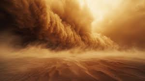

💀 FINAL 3: La Tormenta se lo Llevó
Decides avanzar. La misión no puede esperar. Eres el Sargento Kane, has sobrevivido cosas peores. El desierto no puede detenerte.
Pero el desierto no sabe quién eres.
A los diez minutos de avanzar en la tormenta, pierdes el norte. La brújula gira sin control por la estática eléctrica. La arena te tapa los ojos, la boca, los oídos. Cada paso es una lucha contra una pared invisible de arena y viento.
A los veinte minutos, caes. La temperatura ha bajado otros cinco grados. Tu ropa está empapada de arena. El equipo pesa el doble. Te levantas. Caes de nuevo. Esta vez no te levantas.
Son las del cuando la tormenta de Al-Rashid reclama a otro soldado que creyó poder vencerla.
Los documentos nunca serán recuperados. Nadie sabrá que intentaste.
Resultado de la misión
- Objetivo primario: ❌ No completado
- Estado del agente: KIA
- Causa: Exposición a tormenta de arena
- Recuperación del cuerpo: Imposible
El protocolo dice...
El protocolo de operaciones en zonas de desierto es claro: ante una tormenta de arena activa, buscar refugio inmediato. La misión puede esperar. El agente muerto no puede completar ninguna misión. Kane sabía el protocolo. Eligió ignorarlo. En el campo, las reglas existen por razones.